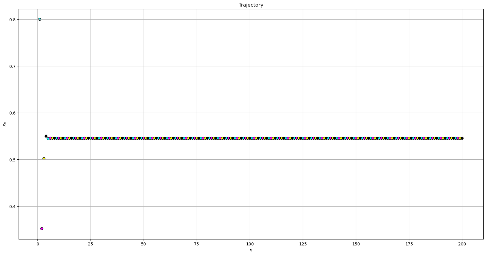
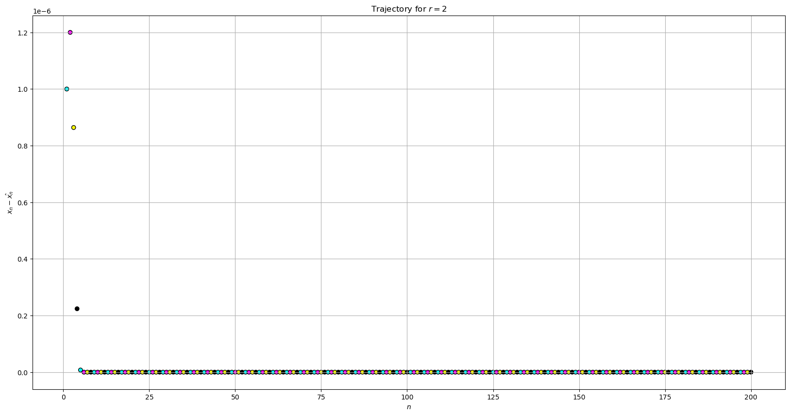
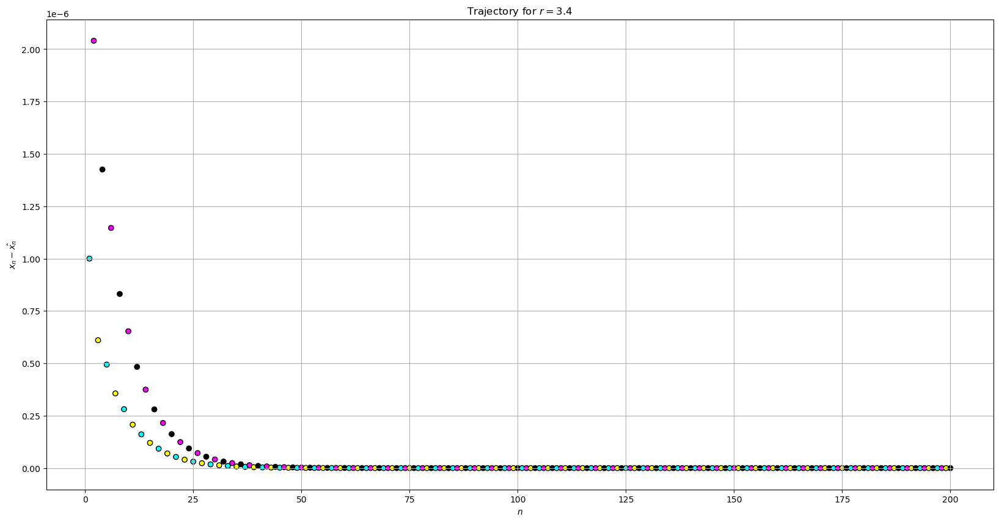

Non-Linear Dynamics Trajectories with Python
by Ritobrata Ghosh
Introduction
In this Notebook, trajectories of the Logistic Map [1] is plotted with Python.
def logistic_function(parameter: float, initial_value: float) -> float:
return parameter * initial_value * (1 - initial_value)def logistic_function_trajectory(parameter: float,
initial_value: float,
num_iter: int) -> np.array:
trajectory = np.zeros(num_iter)
trajectory[0] = initial_value
for i in range(num_iter-1):
trajectory[i+1] = logistic_function(parameter, initial_value)
initial_value = trajectory[i+1]
return np.array(trajectory)array([0.8 , 0.352 , 0.5018112 , 0.54999278, 0.54450159,
0.54564314, 0.54541675, 0.5454621 , 0.54545303, 0.54545485])xs = np.linspace(1, 200, 200)
ys = logistic_function_trajectory(parameter=2.2, initial_value=0.8, num_iter=200)def plot_trajectory(xs, ys, x_label, y_label, title):
plt.figure(figsize=(20,10))
plt.scatter(xs, ys, marker='o', edgecolor='black', c=point_colors * 50);
plt.xlabel(x_label);
plt.ylabel(y_label);
plt.title(title);
plt.grid();
\[r = 2\]
x_n = logistic_function_trajectory(parameter=2.0, initial_value=0.2, num_iter=200)
x_n_hat = logistic_function_trajectory(parameter=2.0, initial_value=0.200001, num_iter=200)plot_trajectory(xs=xs, ys=ys, x_label='$n$', y_label='$ x_n - \hat{x_n} $', title='Trajectory for $r = 2$')
Plotting \(x_n - \hat{x_n}\) vs. \(n\) for \(r=3.4\)
x_n = logistic_function_trajectory(parameter=3.4, initial_value=0.2, num_iter=200)
x_n_hat = logistic_function_trajectory(parameter=3.4, initial_value=0.200001, num_iter=200)
ys = abs(np.subtract(x_n, x_n_hat))
xs = np.linspace(1, 200, 200)
plot_trajectory(xs=xs, ys=ys, x_label='$n$', y_label='$ x_n - \hat{x_n} $', title='Trajectory for $r = 3.4$')
We can thus plot the trajectories of the Logistic Map with Python and relevant libraries.
References
- https://en.wikipedia.org/wiki/Logistic_map
- Bradley, Liz: Nonlinear Dynamics: Mathematical and Computational Approaches via Complexity Explorer, Santa Fe Institute
Cite this Notebook:
@ONLINE {,
author = "Ritobrata Ghosh",
title = "Non Linear Dynamics Trajectories with Python",
month = "apr",
year = "2023",
url = "https://www.kaggle.com/truthr/non-linear-dynamics-trajectories-with-python"
}